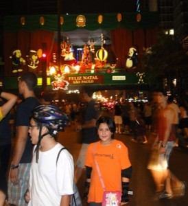
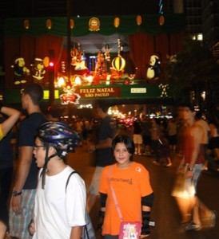

Cia. Ex-sedentário
vamo, vamo, vamo…
Bom pessoas, eu treinei .. parei .. treinei .. parei .. e agora voltei em definitivo, minhas metas são perder peso, baixar tempos, correr provas e terminar inteiro.
Abaixo segue a evolução dos meus treinos que se iniciaram no ultimo sábado e tem sido diários.
Hoje pela manhã me pesei e ja estou com 101,5 . Ate o inicio de Fevereiro VOU estar com 98kg. Hoje ja vesti uma calça social que ao menos uns 3 anos não vestia !!!!!  🙂 🙂 🙂 🙂  To me sentindo ÓTIMO !!!!!!!
 Pois é, a Moça precisa de uma prova para se adentrar no mundo das corridas. E resolvi inscreve-la (sem ela saber) na corrida/caminhada de 5Km do Circuito Sol Net (etapa SP) que será no dia 16/01/2011.
Pois é, a Moça precisa de uma prova para se adentrar no mundo das corridas. E resolvi inscreve-la (sem ela saber) na corrida/caminhada de 5Km do Circuito Sol Net (etapa SP) que será no dia 16/01/2011.
Vou tirar um monte de foto para ela fazer um senhor post. 🙂
hoje treinei UMA HORA…uhu…até dei umas corridinhas intermediarias…q delicia……vamo…vamo…vamo…
retomei minhas atividades hoje…caminhei 40 minutos, pretendo treinar todos os dias…vou conseguir…
vamo…vamo…vamo…
gente, o cansaço foi tanto q só consegui postar hoje…….afiiiii…mega fora d forma…kkkkkkkkkkkkkkkkk.
foi emocionante assistir o alex na sao silvestre e eu naquele vai e vem tb treinei…ebaaaaaaaaaa…isso tudo na compania da paula( namorada do thiago ) ela é super legaaaaaaaalllllllllllllllllllllll.
Além do treino e ficar o tempo todo com a adorável paula, muito feliz d ver o alex chegar e o companheirismo do thiago…menino d oooooooooooouuuuuuuuurrrrrrrrrrrrrooooooooooooooooooooooooo….bjsssssssssss
Antes, treino(s) da semana, ainda recuperando das dores muscurales da São Silvestre eu apenas corri na quarta feira de manhã, por 54 minutos (aproximadamente 6Km). Foi a primeira vez que corri com uma caramalhola (garrafinha d’agua para os não ciclistas) na mão. Acho que vou deixar esta história de camelo…
Hoje, era 8:30 e resolvi treinar, acho que ainda com sono acabei me preocupando com o fone de ouvido e esqueci de pegar a caramanhola e o boné. E fui para rua as 8:50. poucos metros de casa dou de cara com faixas preta e amarela e fiscais de prova. Pensei… “Puxa, tem corrida”. Continuei o treino no meu quintal de treinos, a Av. Presidente Kennedy em São Caetano. Em 1 quilômetro do meu treino, já dou de cara com o pórtico de largada e escutei a buzina da largada. Se tratava da Corrida de Reis de São Caetano.
Fiquei com tanta vontade de correr. Afinal era uma corrida no meu quintal de treinos. Poderia até correr como intruso, mas como nunca fiz isso, resolvi não o fazer. Mas foi interessante o fato de correr no asfalto com a rua fechada para carros. Agora não sei como pude esquecer desta corrida e ao mesmo tempo não fiquei sabendo dela. Vai entender?
Fui adiante e retornei na marca de 5K da corrida (para mim deveria ser uns 3,5K) e voltei correndo até completar 40 minutos… passei a caminhar, o sol estava muito forte. Quando derrepente, ouço meu nome. Era a Rita, uma amiga, que havia me dito que o Sérgio (seu marido) estava participando da corrida.


Ela disse que foi ver ele para se “animar”. Rita, convoco você a se tornar uma “Ex-sedentária”. Topa? Começando com caminhada junto com a Andrea.
Terminei o treino caminhando totalizando 52 minutos. E vamo, vamo, vamo…


Todo ano eu repetia que iria correr a São Silvestre, menos no fim de 2009. Talves pelo fato de já estava correndo e sabia que 15K não é brincadeira.
O Claudio sempre repetia, que a São Silvestre era muvucada e só correria para me acompanhar. Mesmo escutando os problemas relacionados a ela, minha opnião não se alterava, queria porque queria participar.
Mas este ano de 2010, que comecei animado com a corrida do Carrefour, tive problemas em acreditar em mim devido a ter escutado palavras tortas de um médico, isso foi em fevereiro. Esse episódio me tirou por completo dos treinos. Ensaiei algumas voltas, sem sucesso. Até me inscrevi no desafio da Mata Atlântica e fiquei um montão gripado. Só participei por causa da insistência do Claudio e por causa que sou pão duro e não queria perder o valor da inscrição. Valeu a pena ter participado [1] [2], foi a minha esperança voltando. Nessa época, surgiu o convite para participar como blogueiro da Taeq, foi uma experiência maluca e ao mesmo tempo providencial… Tudo que podia dar errado deu. Torci o tornozelo (vi estrelas) ao tentar pegar uma moedo no chão do buzão e até mesmo o médico do GPA me dizendo que eu deveria desistir da corrida (era só 5K). Desiludido, e por empurrão da minha irmã. Procurei saber sobre cirurgia de estômago. O médico me disse que bastava querer, meu plano cobria e em 3 meses eu já estaria na mesa de cirurgia. Apavorei. Marquei com um psicóloga do grupo do mesmo médico que faria a cirurgia. Foi uma conversa providencial. E a partir dali decidi dar uma chance para mim, “Vou tentar emagrecer”. Foi ai que resolvi desprezar o que o médico do GPA me disse e resolvi correr a maratona de revezamento do Pão de Açúcar e terminei, quase morrendo (hehehe). Esta novela toda merece um post detalhado a parte… Espere, em breve.
Terminado a maratona de revezamento. Resolvi dar um UP em tudo e comecei a levar a sério. Sem cerveja, muita água, pouca comida e muito treino. E decidi… “E neste ano que vou correr a São Silvestre” e a Samsung vai ser um teste”. E assim fui fazer os 10K da Samsung. Que foi na minha opinião o melhor post deste blog.
Toda esta introdução é pra valorizar mais ainda um sonho antigo que era a de correr a São Silvestre e ainda uma coroação para toda a dificuldade emocional por qual passei em 2010.
Pois é corri, adorei e completei em 2 horas e 13 minutos… Abaixo do que eu esperava. E com o apoio do Claudio, que é mais que um primo, um irmão para mim.

E da Andrea, minha esposa, que esteve presente na festa (assistindo) e que para mim contou muito. Sem o apoio dela a vitória emocional não seria possÍvel.
Os incentivos vinham de vários lados… Mas teve um que não esperava: Miguel Delgado – CEO dos Baleias me presenteou com um Manto Coral, na qual recebi por Sedex. Não pude acreditar… fiquei muito feliz. Nem conhecia-o pessoalmente, apenas pelos textos em seu site. E ainda ele VOLTOU para me acompanhar e incentivar no meio da Brigadeiro. Me senti importante. Já acumulo meu terceiro Ídolo (Thiago, Enio e agora o Miguel). VALEU MIGUEL…

Nossa equipe Ex-sedentario esteve representada em peso nessa São Silvestre, sendo que a Andrea assistiu, Thiago superou seu tempo do ano passado (e continua sendo meu herói), Ana assistiu também e Claudião… brilhou como mascote dos Baleias (vestido de Esmeralda).

Meus paces foram (por quilômetro):
Veja o vÍdeo que eu, Claudio e Miguel cruzamos a linha de chegada. O Claudio com a Esmeralda (mascote Baleias) tropeçou no tapete da linha de chegada… Mas em nada ofuscou aquele momento. Foi lindo, foi lindo.
A coroação de fato foi receber a medalha São Sivestre/Baleias. Essa sim, depois da prova como deveria ser sempre.

Claudio, Claudião, anima até velório… Ele deve ter sido o cara mais fotografado… Toda criança gritava: “Olha o peixinho” e ele corria até a criança, ficava do lado e os pais tiravam uma foto. Isso aconteceu inúmeras vezes… E ri muito com esta situação. E por falar nisso. Era muito divertido ver as pessoas falando: “Olha o Peixe” e o Claudio gritando “É BALEIA”, ou senão, “Olha o Nemo” e o Claudio gritava “É BALEIA, O NEMO TEM LISTRAS”. A que eu mais ri foi “Olha um Santista” e o Claudio “ESSA BALEIA É CORINTIANA”. Me perdi do Claudio no Km 5 mas ele apareceu no Km 9 e me acompanhou até o fim… Foi sensacional ter ele do meu lado nessa minha vitória pessoal.
Obrigado a todo mundo que me incentivou e me incentiva. A alegria que eu senti nesse dia esta gravada e fixada. Quero viver mais e mais estes momentos. Num balanço cheguei a seguinte conclusão:
E a festa continua nos outros blogs baleias, valeu galera pela super amizade, confira:
Ontem fugindo da chuva cheguei ao Ibirapuera para mais um treino logo no inicio vi um cara passando que parecia ser conhecido, apertei o passo dei aquele olhar 43 rs e vi que era o Enio, corremos juntos uns 8km depois ele encerrou o treino e eu segui por mais volta, acho que atrapalhei o treino dele já que ele esta se preparando pra uma maratona e eu pra 10km.
Enio se te atrapalhei me desculpe, mas fazer 11km é mais fácil com uma boa companhia.
        Â
         Â
Â
Â
          De inÍcio quero desejar a todos nossos colegas, amigos, amigos dos amigos, seguidores deste blog um Feliz Ano Novo!!!
            Depois do meu acidente, ou melhor, do meu entorse no tornozelo direito grau II, tive minha rotina diária mudada literalmente, passei 3 semanas andando de muletas, fui proibida de colocar o pé direito no chão e sessões de fisioterapia já na segunda semana do acidente.
            Apesar de aleijada, não fiquei afastada do escritório, só que nessa fase meu tempo acabou se tornando restrito, minha locomoção lenta, gelo no local a cada 3 hs, fisio e, em casa além do repouso acabei por me desligar de muitas coisas, meu pensamento voava ao tempo de recuperação, controlar o inchaço do tornozelo mantendo sempre a perna elevada.
            Só que novembro acabou tornando-se um mês frustrante, havia feito inscrição para correr todos os finais de semana. Em alguns correria com Melinha e em outro irÍamos assistir Syssi. Acabei por administrar essa frustração, pedindo para o Igor correr no meu lugar, aliás o tempo dele foi bom e Melinha também, o que me deixou feliz por eles.
           Inscrevi a Syssi na Corrida Infantil da Corpore  e fui vê-la participar de cadeira de rodas, até esbarramos com o Claudião por lá, lógico, Henrique também participou!

            A entrega do kit d Circuito Vênus aconteceu no Jóquei – que não tem acesso para deficientes, uma grande falha –, desci as escadarias de muletas, devagar mas fui, olhei alguns stands dos patrocinadores e Syssi fez uma aula de Pilates, até pensei em participar da corrida com o auxÍlio do Igor empurrando a cadeira de rodas, no fim desisti, achei que seria muito sofrimento para ele.
 Â Â Â Â Â Â Â Â
          Â
 Â
            Após 3 semanas do acidente, fui liberada para andar de muletas com o pé no chão e mais sessões de fisioterapia. Ah, detalhe, sempre de robofoot  dia e noite, um trem horrÍvel para andar, mas de muita estabilidade para meu tornozelo.
            Durante este tempo, acabei por descobrir uma nova modalidade, acompanhando Syssi em suas aulas de patinação no Ibirapuera me encantei com o esporte.

            Frustrada tentei ficar longe dos esportes, só tentei porque através de mala direta recebi um convite para patinar na Av. Paulista no dia 25 de dezembro a noitinha para ver as decorações natalinas na avenida que é tida como o coração financeiro da cidade. Como passamos no Natal aqui em Sampa, dia 25 eu, Silvio e Syssi fomos participar desse evento, mas tipo assim (rs), eu de robofoot e bengala só fiquei na vontade e acabei por andar na Paulista vendo e filmando as decorações, o tempo estava maravilhoso, muitas pessoas na rua usando 1 pista da avenida, os carros trafegando devagar, todos sem stress, uma Av. Paulista difÍcil de ver em outras ocasiões. O papai Silvio foi correndo acompanhar a filhota Syssi que patinou com os demais. (agora esse problema está solucionado, Silvio acabou de adquirir seu patins!!)
Â
 Â Â Â Â
              
         
           Já na 6ª. semana do acidente eu andava de imobilizador de tornozelo apenas em casa.
           Como não podia ser diferente, passei o Natal de robofoot, mas ansiosa pelo retorno a ortopedista no dia 30/12 que ao examinar meu tornozelo (o calcanhar já estava firme, uauhhhhhhhh) determinou andar somente com imobilizador de tornozelo, liberando para hidroginástica e bicicleta sem peso. Esse foi meu presente de Natal!!! O diagnóstico de que o ligamento já restabeleceu.
           Dia 31 o dia mais esperados por algo em torno de 15.000 corredores além do Claudião, Alex e Thiago, aconteceu a São Silvestre e, para prestigiar nossa galera e tantos outros corredores fomos (minha vizinha para ver o sobrinho, eu e Syssi para ver os Ex-Sedentários) até a Av. São João, um pouco antes da subida do Elevado, estava eu lá como espectadora para ver a corrida, tão diferente de outrora.
           Confesso que nem na TV eu apreciava ver a SS, mas este ano sai para a rua. Depois da corrida feminina, vimos os batedores acompanhando a elite masculina e mais atrás o restante dos corredores……… era um mar de pessoas descendo a S. João sem noção ……, meu coração disparava, a vontade de estar correndo (e nem precisava ser na SS, em qualquer corrida) foi muito grande, mas devo me limitar a apenas sentir emoções neste momento.
           Enquanto eu filmava na câmera, minha amiga via a transmissão no MP7, ficamos ali sabendo da vitória da queniana e um pouco mais tarde da vitória do Marilson, mas o mar de corredor continuava descendo a S. João e dentre eles o Claudião que acabei por ver de relance depois da passagem do sobrinho de minha amiga. Dali fomos acompanhar a corrida na Av. Rio Branco esquina com Helvetia, nesse trecho os corredores já demonstravam cansaço … foi então que consegui ver o Claudião acompanhado do Alecão e tiramos umas fotos juntos………
 Â Â Â Â Â Â Â Â
       Â
           Agora estou em nova fase de tratamento, fortalecimento muscular e treinamento proprioceptivo para que não ter lesão recidiva. Incomoda apenas andar de imobilizador de tornozelo com tênis. Em casa, tenho andado descalça, já que o imobilizador prende um pouco a circulação.
           Enfim foram 60 dias e estou me recuperando, mas ainda sinto seus sinais, sei que ainda tenho um pouco mais de tempo para voltar a praticar esporte de impacto, mas é questão de tempo, quem sabe no final de fevereiro eu não volte para as ruas?! Quer correndo….. ou patinando.
           Estou voltando………….. deixo aqui meu grande abraço e um 2011 com muita, mas muiiiiiiiiiiiiiiiita S A Ú D E e quem sabe não nos esbarrarmos nas corridas de rua durante o ano?!
Faz tempo que não posto nada aqui e essa vai ser be rapidinha
Corrida de são Silvestre em 1h21min dados da corrida em:
http://connect.garmin.com/activity/61610168
http://connect.garmin.com/player/61610168
Parabéns pro Alecão pela grande estréia \o/
Depois ele fará um post detalhando tudo.
Em 2011 vou iniciar na academia e tentar me dedicar mais aos treino e deixar de ser uma tartarua de maratona.
Abraços
.jpg "DSC01744 (1024x576)")
.jpg "DSC01800 (1024x576)")
.jpg "DSC01859 (1024x576)")
.jpg "DSC01884 (1024x576)")
.jpg "DSCN5697 (1024x768)")


Nós somos 100 JuÍzo
Nós somos Baleias


{kind=link}
{kind=link}
Últimos comentários